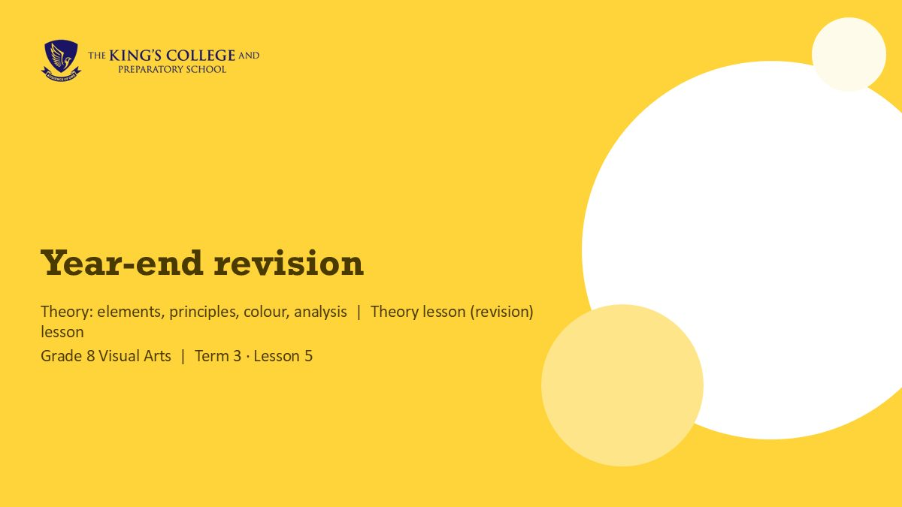

Term 3 · Lesson 5 · Theory lesson (revision)
Year-end revision
Start here
Today I will
- Today I will revise the whole year: elements, principles, colour theory, the five levels and Sekoto
- Today I will practise exam-style questions
- Today I will finish my painting if it is not done
Think first
Draw a quick colour wheel from memory in 60 seconds. Which colours did you place without thinking, and which did you have to work out?
Words to Know
| Word | Meaning |
|---|---|
| Colour scheme | A planned group of colours, such as complementary, analogous, triadic or monochromatic. |
| Tint, tone and shade | A hue plus white, plus grey, or plus black. |
| Formal analysis | Level 2: how the elements and principles are used and their effect. |
| Context | Level 4: when, where and why an artwork was made. |
| Gerard Sekoto | South African painter (1913–1993) of everyday life in Sophiatown, District Six and Eastwood. |
Slides

Notes
Revising the whole year (elements, principles, colour theory, five levels, Sekoto) for the year-end exam.
The year in four blocks
- Elements: Line, shape, form, value, colour, texture and space, and how we drew each one.
- Principles: Pattern, rhythm, emphasis, unity, movement, balance, contrast, proportion and variety.
- Colour theory: Primary, secondary, tertiary; tint, tone, shade; warm and cool; four colour schemes.
- Looking at art: The five levels, The Starry Night and Gerard Sekoto.
A strong five-level answer
- Level 1: One or two sentences: first impression and mood.
- Level 2: Two elements and one principle, each with its effect and where you see it.
- Level 3: What the work is about, with evidence.
- Level 4 and 5: One or two facts about when and why it was made; your opinion with a reason.
Remember
Elements, principles, colour and five levels: you have a whole year of words to use.
Practical
You need: Activity Book, Handbook, Vocabulary booklet
Year-end exam practice
- Spend 20 minutes revising with the Handbook, starting with your weakest block.
- Close the Handbook and answer the practice questions in the Activity Book (25 minutes).
- Mark your answers with the memo in a different colour.
- Write down the three things you will revise at home before the exam.
- If your Starry Night study is not finished, finish it at the side table instead of the practice questions.
Assessment
Year-end exam follows (theory, or theory and practical combined).
Test yourself
- What is a monochromatic colour scheme?
- Name the seven elements of art.
- What should every Level 2 sentence include?
Show answers
1. One hue with its tints, shades and tones. 2. Line, shape, form, value, colour, texture and space. 3. An element or principle, where you see it, and the effect it creates.
Finished early?
Five-level sentence starters
Write one sentence per level about a Sekoto painting, as quick exam practice.
- Look at the Sekoto painting on the board.
- Write one sentence for each of the five levels, using a starter such as 'My eye goes first to...'.
- Use at least three art words and underline them.
- Check that your Level 5 opinion has a fact to back it up.